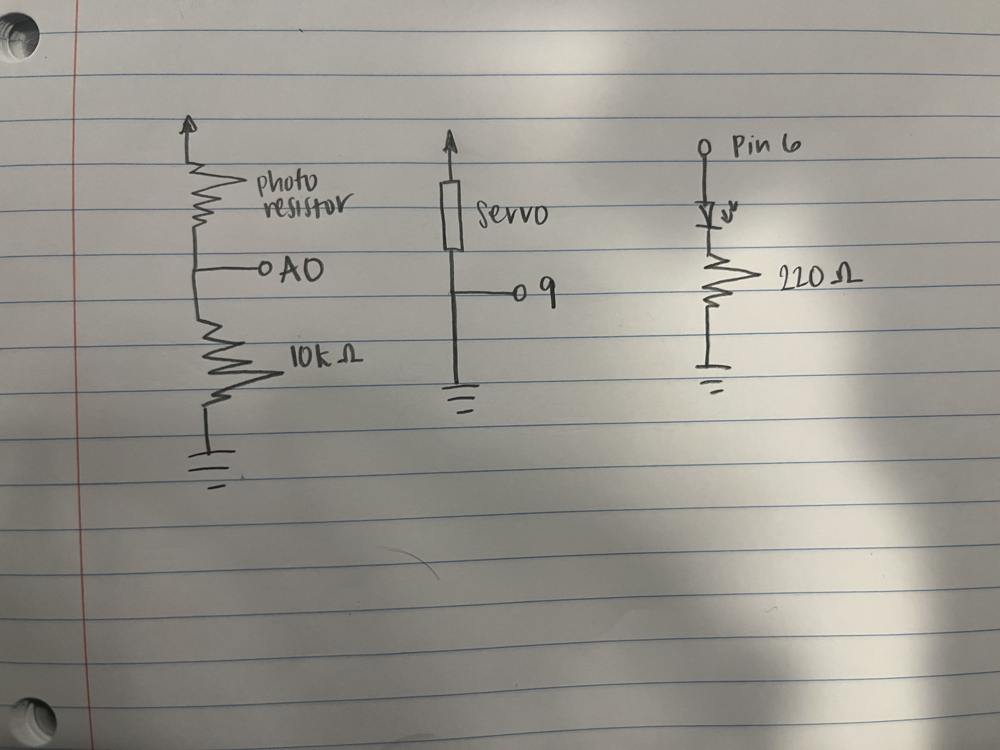

Jency's Assignment 3!

I calculated the the resistor necessary for the red LEDs using the V=IR equation. R = V/I = (5V-1.8V)/0.02A = 160 ohms. Thus, I used the next closest resistor which is 220 ohms. I used a 10k resistor for the photoresistor because the resistor prevents the photoresistor from closing the circuit when it is off.

Here is all the Aruduino Code for assignment 3!
Arduino Code